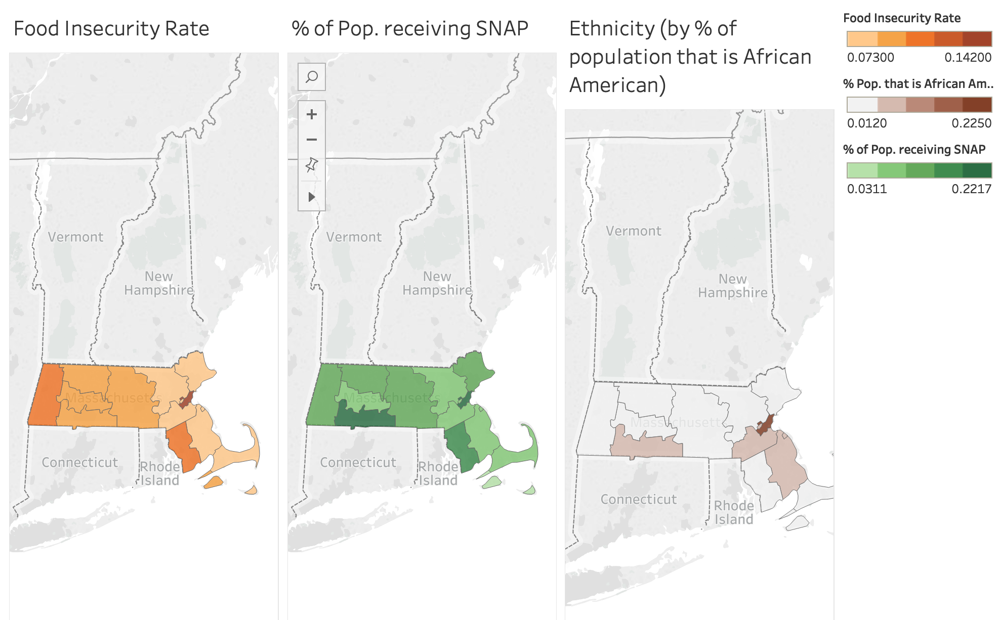
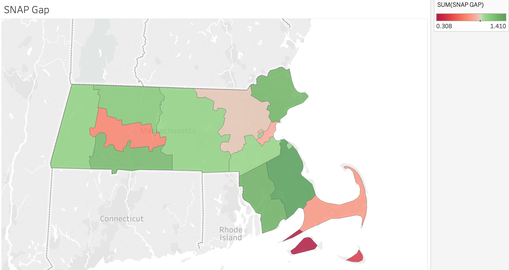

Team member names: Sanjay Ganeshan, Wataru Doita, Zhu Shikun, and Michael Rieker
Audience of the story: legislative members that are government workers for Massachusetts. It’s important to understand what visuals, formats, and colors work for them. For instance, using red and blue would signify different political parties whereas we may be wanting to emphasize good and bad. Considering this, we will focus on quick, high level summaries at first, and then dive into the specifics of our narrative.
Our goal: examine demographic disparities in food insecurity in Massachusetts using the given data and various data mapping tools (such as Tableau or CartoDB). More specifically, we want to see how race relates to food insecurity. A final goal would be to have the government change the amount of money going to different areas in order to address food issues.
Who we are in the story: organizing body (a lobbying group, for example) presenting our findings to Massachusetts legislature advocating for the expansion of food assistance programs by county.
Abstract words that we need help presenting: change, hunger, food assistance, demographics, racism, poverty.
Context of the story: we want to convince the Massachusetts legislature to take a deeper look at their food assistance programs and some underlying biases that may be affecting their decisions. The presentation can be viewed as a meeting with these legislative members in which we present the data we have found.
The Sketch:
The main focus of this sketch is maps and creative maps. More specifically, our group chose to use the “Feeding America – Hunger in America (2016)” dataset as well as other data sources that we have listed in the references. These other data sources allowed us to gain information on the demographic and income inequality situations within the counties and cities of Massachusetts.
First step: we start with a broader narrative that concerns food security, food assistance, and demographics for all of Massachusetts. More specifically, we are interested in the Supplemental Nutrition Assistance Program (SNAP), previously known as the Food Stamp Program. This program focuses on providing food-purchasing assistance for low-income people in the United States. This step helps to build context for the overall problem. If we had more time beyond this sketch, we would start the presentation with an overview of what the problem looks like across the United States.
Second step: we dive into the more detailed aspects of food security and demographics. For this sketch, that means honing in on multiple counties in one state, which is Massachusetts. We could ask the question: “How much do you think hunger is a problem in your district or county?” This serves as a way to draw the audience into the discussion and to make them more engaged.
We will compare statistics among different counties and use this to educate the legislative members. We will focus on a limited number of counties given the nature of the sketch. That being said, this type of analysis could easily be generalized to other counties and states.
It’s important to note that about 1,443,000 Masshealth Recipients are eligible for SNAP. However, only 763,000 are SNAP recipients, leaving 680,000 people without the aid of snap. That’s a gap of close to 50% in terms of aid received.
Third step: use multiple “comparative” maps in which we show how the counties differ from one another in topics such as food insecurity, ethnicity, and involvement in SNAP. This will challenge the knowledge of the legislative officials and hopefully give them insight into issues in their respective county or district. We will highlight differences in demographics, ethnicity, and SNAP within Massachusetts and how this relates to differences based on location. An example with an interactive maps and related statistics can be seen below. If we were continuing this sketch, we would dive deeper into other ethnicities and demographic characteristics.


Conclusion: One of the main takeaways is that we do not want to let biases and perceived and/or actual inequalities take over funding choices as this results in unfair treatment of others. We will give the audience information/statistics that they can take away so that a lasting impression is made on the minds of the government officials. In the end, we hope to convince the audience, who are stakeholders in the government, that providing more people with assistance from SNAP can stimulate the economy, increase food access, and help low income residents.
References:
- https://www.feedingamerica.org/sites/default/files/research/map-the-meal-gap/2016/overall/MA_AllCounties_CDs_MMG_2016.pdf
- https://www.feedingamerica.org/sites/default/files/research/map-the-meal-gap/2016/child/MA_AllCounties_CDs_CFI_2016.pdf
- https://statisticalatlas.com/state/Massachusetts/Race-and-Ethnicity
- https://public.tableau.com/profile/food.bank.of.western.ma#!/vizhome/MHandSNAP/Story1